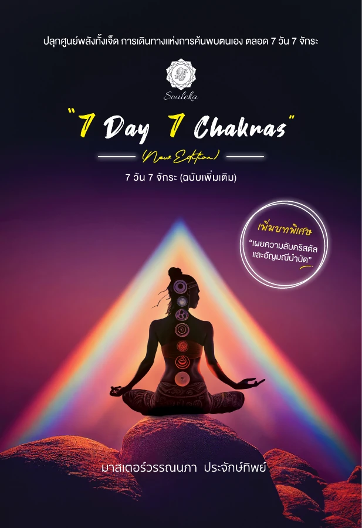

มีคู่มือเล็ก ๆ
ไว้กลับมาพัก
เปิดแนวทางฝึกสั้น ๆ ใช้ Checklist เตรียมช่วงเวลาของคุณ แล้วจดสิ่งที่สังเกตไว้ในบันทึก 7 วัน
CHAKRA FOR EVERYDAY LIFE
7 จังหวะ กลับมาสู่ตัวเอง
เรียนรู้จักระและสมาธิผ่านกิจกรรมเล็ก ๆ ในชีวิตประจำวัน ลองเริ่มจากช่วงพักสั้น ๆ สังเกตความรู้สึก แล้วค่อยอ่านหรือเรียนต่อในจังหวะของคุณ
A LITTLE PAUSE. A WAY TO KEEP GOING.
ลองใช้ชุดฟรี หยิบหนังสือมาอ่าน
หรือเรียนตามลำดับ เลือกได้เมื่อพร้อม
เปิดแนวทางฝึกสั้น ๆ ใช้ Checklist เตรียมช่วงเวลาของคุณ แล้วจดสิ่งที่สังเกตไว้ในบันทึก 7 วัน
หนังสือ 7 วัน 7 จักระ พาคุณรู้จักพื้นฐานและแนวทางฝึก เก็บไว้อ่านทบทวน พร้อมหนังสือดิจิทัลชื่อเดียวกัน
เรียนจากพื้นฐานและจักระทั้ง 7 ไปสู่แนวทางฝึก สมาธิสี และภาษาสี มีสารบัญและตัวอย่างเอกสารให้ดูก่อน
ชุดฟรีเปิดให้ใช้ได้เสมอ และเริ่มคอร์สได้โดยไม่ต้องซื้อหนังสือก่อน
*เครดิตใช้ได้หนึ่งครั้งจากยอดซื้อที่เข้าเงื่อนไขและตรวจสอบแล้ว ไม่รวมค่าจัดส่ง
YOUR LIFE, YOUR PRACTICE
เริ่มจากสังเกตลมหายใจ ให้ตัวเองได้หยุดพัก แล้วค่อยสำรวจสิ่งที่อยู่ในใจ
SEVEN CHAKRAS. EVERYDAY MOMENTS.
ใช้ความหมายของจักระเป็นกรอบชวนทบทวนชีวิต
เลือกสีเพื่อเปิดคำถามและกิจกรรมเล็ก ๆ ของวันนี้
ลองสำรวจวันนี้
รับรู้เท้าที่สัมผัสพื้น แล้วถามตัวเองว่า วันนี้อะไรช่วยให้ฉันรู้สึกมั่นคงขึ้นได้บ้าง?
“ฉันให้เวลาตัวเอง ค่อย ๆ เริ่มต้น”
แต่ละสีคือมุมชวนสำรวจตัวเองตามแนวคิดจักระ เลือกเริ่มจากเรื่องที่ใส่ใจได้ โดยไม่ต้องทำเรียงลำดับ
YOUR SEVEN. YOUR OWN PACE.
ให้เวลากับความรู้สึก ความสัมพันธ์ และสิ่งที่คุณใส่ใจในชีวิตประจำวัน แล้วอ่านผลในแบบสำรวจเดิมของ EMC เพื่อใช้เป็นจุดเริ่มต้นในการทบทวนตัวเอง
MANTRALO โดย วรรณนภา ประจักษ์ทิพย์จากผู้สร้าง EMC สู่พื้นที่เรียนรู้และฝึกในชีวิตประจำวัน
อ่านคลังความรู้เดิมของ EMCYOUR FIRST SEVEN DAYS

วางไว้ในมุมที่ชอบ หยิบมาอ่านเรื่องจักระทีละส่วน พร้อมหนังสือดิจิทัลเล่มเดียวกันสำหรับเปิดทบทวนระหว่างวัน
อ่านสักนิด ลองหนึ่งกิจกรรม
แล้วจดช่วงเวลาของคุณไว้ในบันทึก 7 วัน
GO A LITTLE DEEPER
เริ่มจากพื้นฐานและจักระทั้ง 7 แล้วค่อยไปสู่การฝึก สมาธิสี และภาษาสี มีสารบัญ 12 บทให้เห็นเส้นทางก่อนตัดสินใจ เลือกอ่านตัวอย่างเอกสารจากคอร์สได้
A LIBRARY FOR EVERY SIDE OF YOU
ความตั้งใจ ความสัมพันธ์ วันทำงาน และการดูแลตัวเอง
เลือกสำรวจหนังสือดิจิทัลในคอลเลกชันของเรา
หนังสือดิจิทัลหลัก 8 เล่ม และคอลเลกชันที่กำลังเตรียม
เลือกซื้อแยก หรือดูข้อเสนอชุดครบ 8 เล่ม 1,090 บาท
START SMALL. GROW AT YOUR PACE.
MORE WAYS TO BEGIN
รู้จักจักระ สมาธิ และกิจวัตรเล็ก ๆ ผ่านคลิปสั้นจากคลัง EMC พร้อมคู่มือเริ่มฝึกฟรี
ดูคลิปความรู้ฟรีแบบสำรวจและกิจกรรมฟรีดูตัวอย่างคลังหนังสือและบทเรียน พร้อมทางเข้าระบบเรียนเดิมสำหรับสมาชิก EMC
สำรวจพื้นที่สมาชิกเลือกดูสมุด โปสเตอร์ และคอลเลกชันคริสตัลตามความสนใจของคุณ
ดูสินค้าเสริมA FEW THINGS TO KNOW
มีอะไรอยากคุยเพิ่มเติม
เรายินดีช่วยหาจุดเริ่มต้นให้คุณ
MANTRALO คือแบรนด์การเรียนรู้เรื่องจักระ ที่ชวนให้กลับมาเข้าใจและดูแลตัวเองผ่านการอ่าน สมาธิ และกิจกรรมเล็ก ๆ มีชุดเริ่มต้นฟรี หนังสือ หนังสือดิจิทัล และคอร์สให้เลือกเรียนรู้ตามความสนใจ
7 จังหวะคือกรอบชวนสำรวจตัวเองผ่านแนวคิดจักระทั้ง 7 เลือกเริ่มจากเรื่องที่ใส่ใจและกลับมาทบทวนเมื่อสะดวกได้ ส่วนบันทึก 7 วันเป็นเครื่องมือให้ลองจด ไม่ใช่กำหนดเวลาที่ต้องเห็นผล
เริ่มได้จากกิจกรรมอ่านข้อความนำทาง 3 นาที แล้วใช้คู่มือและ Checklist ช่วยสังเกตความรู้สึกของตัวเอง โดยไม่ต้องมีพื้นฐานหรืออุปกรณ์พิเศษ
กิจกรรมเริ่มต้นชวนสังเกตสิ่งที่เกิดขึ้น โดยไม่ต้องบังคับให้ความคิดหายไป เลือกเวลาสั้น ๆ ที่สะดวก พักหรือหยุดได้ แล้วใช้บันทึก 7 วันจดสิ่งที่อยากลองต่อ
หนังสือเป็นจุดเริ่มต้นสำหรับอ่านและทบทวนด้วยตัวเอง ส่วนคอร์สจัดเนื้อหาเป็น 12 บทเรียนให้เรียนต่ออย่างเป็นลำดับ ดูรายการเนื้อหาและข้อเสนอได้ในหน้าคอร์ส
แผนข้อเสนอให้ใช้ยอดซื้อหนังสือหรือ ชุดเริ่มต้นดิจิทัล ที่ตรวจสอบแล้วเป็นเครดิตสูงสุด 290 บาทหนึ่งครั้ง คอร์สราคา 2,900 บาทจึงเหลือจ่าย 2,610 บาทเมื่อได้เครดิตเต็ม ค่าจัดส่งไม่รวมในเครดิต
มีคู่มือ MANTRALO 5 หน้า Checklist ก่อนและหลังฝึก 1 หน้า และบันทึก 7 วัน 4 หน้า เปิดอ่านหรือดาวน์โหลดได้ฟรีโดยไม่ต้องสมัครรับข้อความ เปิดชุดเริ่มต้นฟรี
A LITTLE TIME, JUST FOR YOU
เริ่มจากช่วงพักสั้น ๆ แล้วเก็บคู่มือไว้ค่อย ๆ ฝึกต่อในวันของคุณ